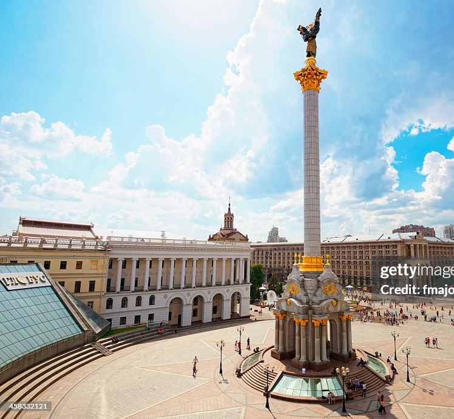
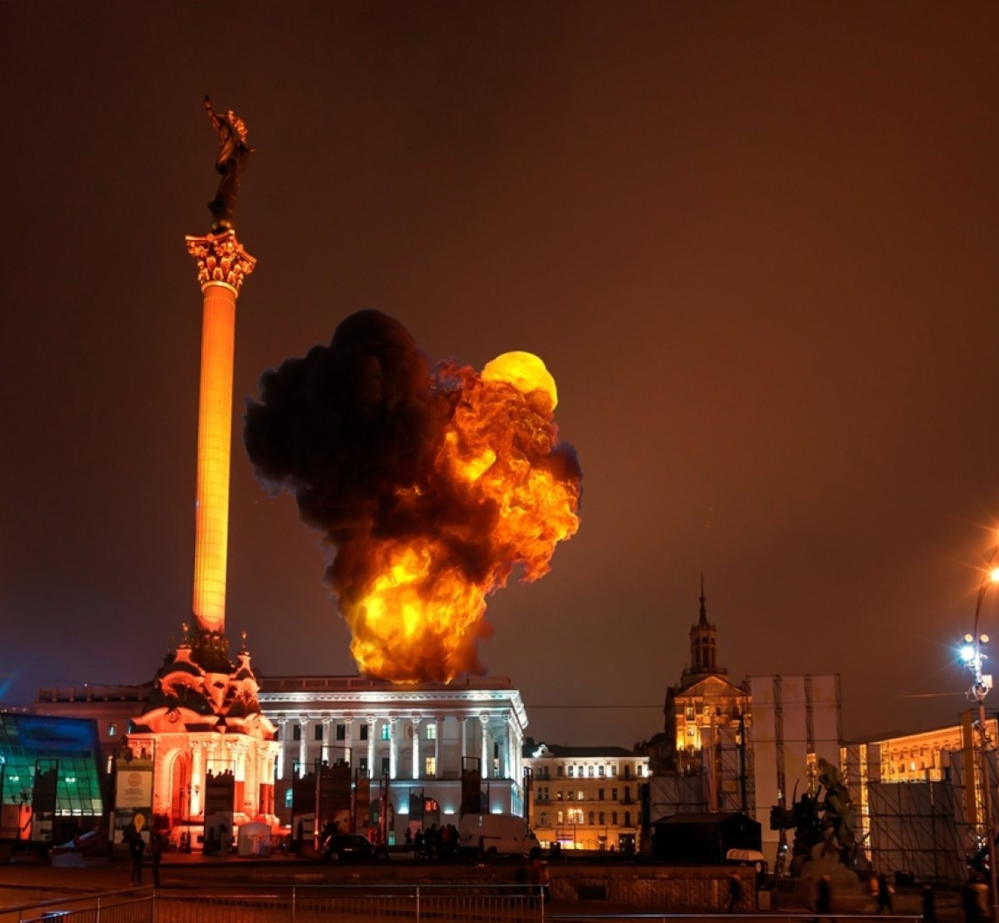

The date was February 24th, 2022, a day that would forever be stained by the Kremlin’s unwarranted military actions. For months, Russia had been building up their military presence along the Ukrainian border, unnerving global media and top politicians. No matter what the world thought, they couldn’t have seen the monstrosity and depravity waiting on the horizon. Then, in a single moment, Ukraine’s peace was shattered. Air raid sirens sounded across Ukrainian cities, even ripping through the capital, Kyiv. The Russian regime unleashed thousands of soldiers and firepower against Ukraine. The war had begun.
The War Begins


Following the initial invasion, there was a relentless barrage of air and ground attacks, through missiles, shelling, and offensive operations. Eastern Ukrainian cities, near the Russian border, were under the highest levels of bombing to begin with, and most of the population there had to evacuate. Russia’s sole mission is not just to attack military infrastructure and personnel, but to attack civilians. There have been countless attacks on innocent Ukrainian cities since the war began, causing massive amounts of displacement throughout the country.
The War Begins
Millions of Ukrainians were displaced due to the war. Over 3.7 million citizens have been internally displaced, 5.9 million people have crossed the border to seek refuge in other countries, and approximately 10.8 million Ukrainians are in need of humanitarian assistance, according to the UN Refugee Agency.
The Story of Yulia and Her Family
The Story of Yulia and Her Family
As the Ukrainian war was in full effect, Yulia Rybinska and her family knew that their lives were in danger. One day, at 5am, Yulia’s husband woke her up and told her something that no one would ever want to hear: “It’s time to leave the country.” As much as Yulia wanted to stay in Ukraine, she knew that the safety of herself, her husband, and children were the most important.